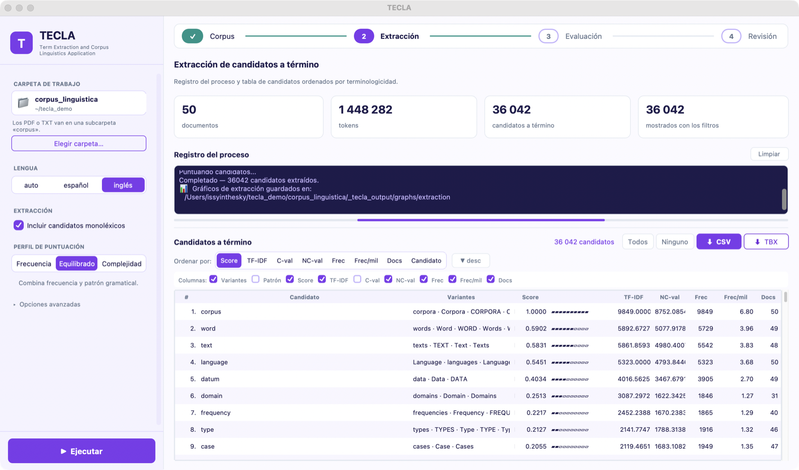
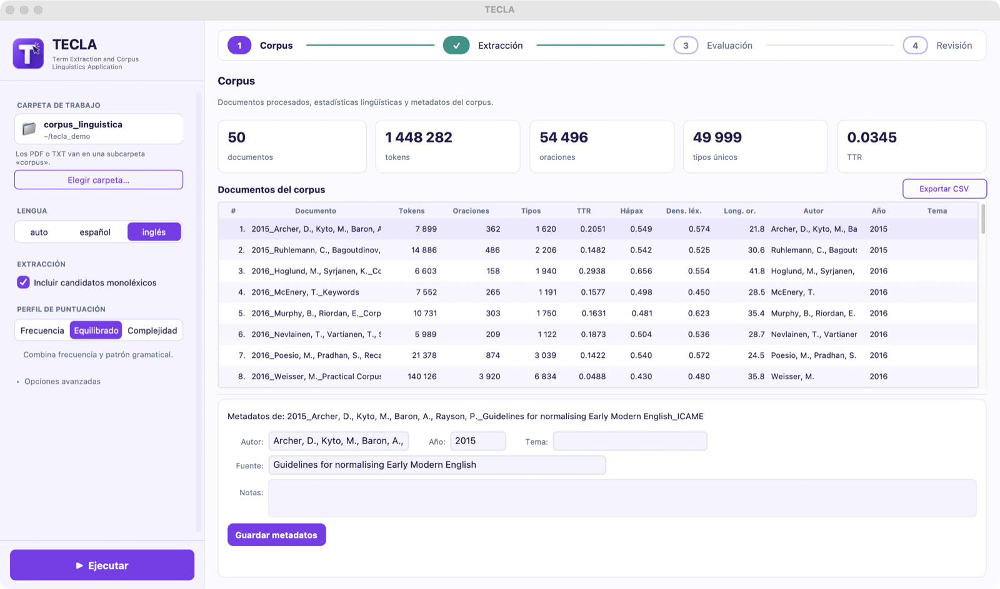
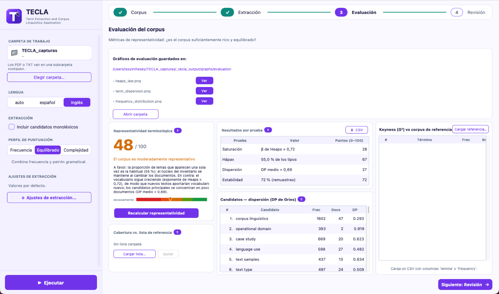
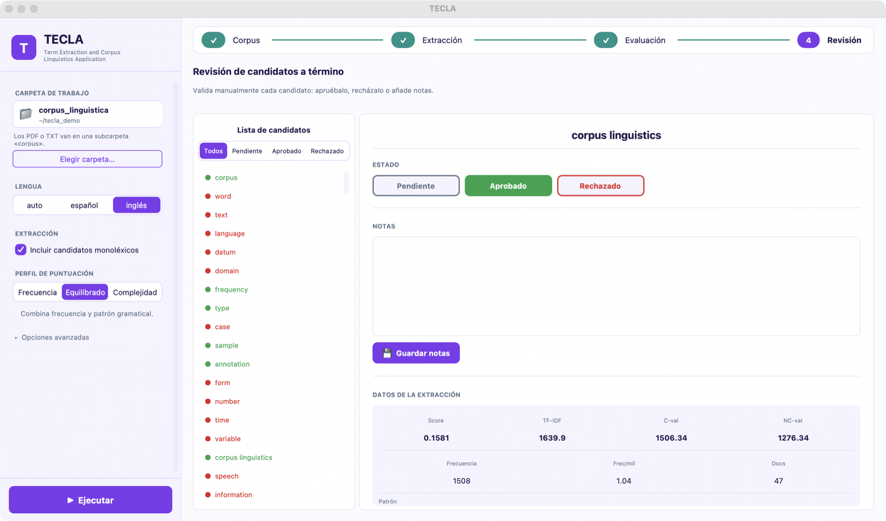

Una herramienta de código abierto para trabajar con la terminología de un dominio a partir de sus textos, sin necesidad de programar.

TECLA reúne en un mismo entorno las fases del trabajo terminográfico basado en corpus.
Se elige la carpeta con los documentos, en PDF o en texto plano. TECLA los convierte a texto, los limpia y los analiza lingüísticamente, y muestra los datos descriptivos de cada documento y del corpus.
Primero, una etapa lingüística: se buscan las secuencias que siguen los patrones gramaticales habituales de los términos. Después, una estadística: TF-IDF, C-value y NC-value se combinan en un índice de terminologicidad.
Antes de dar por bueno un inventario conviene saber si el corpus recoge la terminología del dominio. TECLA aplica cuatro tests: cobertura, saturación, dispersión y estabilidad.
Ningún sistema automático sustituye el juicio del especialista. Cada candidato se aprueba, se rechaza o se deja pendiente, con notas y con todas sus cifras a la vista. El inventario revisado se exporta a CSV y a TBX-Basic.



En Windows y en macOS, TECLA se instala como cualquier otro programa: se descarga el instalador, se abre y se siguen los pasos. No hace falta instalar Python ni permisos de administrador, y los modelos lingüísticos de español e inglés ya van incluidos.
Al abrir el instalador, Windows puede mostrar el aviso «Windows protegió su PC», porque el programa no lleva firma digital. Basta con pulsar «Más información» y, después, «Ejecutar de todas formas».
En macOS, se abre el archivo descargado y se arrastra TECLA a la carpeta Aplicaciones. La versión para macOS funciona en los Mac con procesador de Apple (M1 o posterior). La primera vez, macOS puede avisar de que no ha podido verificar la aplicación, por el mismo motivo: en Ajustes del Sistema, «Privacidad y seguridad», basta con pulsar «Abrir igualmente».
Para actualizar no hace falta desinstalar la versión anterior: se descarga el instalador nuevo y se instala encima (en macOS, se elige «Reemplazar» al arrastrar TECLA a Aplicaciones). Los proyectos, los resultados y la revisión se guardan en la carpeta de trabajo y se conservan.
En Linux, o para usar TECLA desde Python, se instala como paquete (Python 3.9 o superior):
git clone https://github.com/isabel-mm/TECLA.git
cd TECLA
pip install -e .
# Modelos lingüísticos para español e inglés
python -m spacy download es_core_news_md
python -m spacy download en_core_web_lg
# Abrir la interfaz gráfica
python gui/tecla_gui.pyLa guía de uso explica cada pantalla y cada opción. TECLA también puede usarse desde la línea de comandos, con las órdenes tecla extract, tecla stats y tecla evaluate, o importarse desde un programa en Python.
No. La interfaz gráfica recorre todo el flujo con botones. Quien programe puede usar además la línea de comandos o importar los módulos desde Python.
No. TECLA se ejecuta en el propio ordenador y los documentos no salen de él. Solo el cuaderno de demostración de Google Colab copia los textos a una sesión de Google.
Por ahora, con textos en español y en inglés: son las dos lenguas para las que TECLA tiene gramática de patrones, modelos lingüísticos y listas de palabras vacías.
PDF y texto plano. Los PDF se convierten a texto y se limpian antes del análisis.
No. TECLA propone candidatos y deja a la vista las cifras con que los ordena; decidir cuáles son términos sigue siendo trabajo del especialista, y para eso está la pantalla de revisión.
La idea de TECLA nace en 2021, con el inicio de una tesis doctoral de la Universidad de Cádiz sobre la extracción automática de términos, centrada específicamente en la terminología de la lingüística de corpus en inglés y en español.
Ese trabajo obliga a encadenar muchas operaciones distintas: convertir y limpiar los documentos, analizarlos lingüísticamente, buscar las secuencias con forma de término, ordenarlas con medidas estadísticas, comprobar si el corpus es suficiente y revisar el resultado a mano. TECLA las reúne en una sola herramienta, con una interfaz que no exige programar y que deja a la vista cada cifra y cada decisión.
La herramienta se publica para que el procedimiento pueda repetirse con otros textos, de otros dominios, y para que el inventario pueda actualizarse cuando el corpus crezca. Del mismo trabajo procede GLiCor, un glosario bilingüe de lingüística de corpus.
Como buena herramienta terminológica, TECLA cuida su propia denominación: es un acrónimo, Term Extraction and Corpus Linguistics Application, y es una palabra: una tecla, como las que mueven cualquier aplicación.